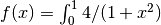
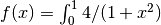

BLT¶
Build, Link and Triumph
BLT is composition of CMake macros and several widely used open source tools assembled to simplify HPC software development.
BLT was released by Lawrence Livermore National Laboratory (LLNL) under a BSD-style open source license. It is developed on github under LLNL’s github organization: https://github.com/llnl/blt
BLT at a Glance¶
- Simplifies Setup
- CMake macros for:
- Creating libraries and executables
- Managing compiler flags
- Managing external dependencies
- Multi-platform support (HPC Platforms, OSX, Windows)
- CMake macros for:
- Batteries included
- Built-in support for HPC Basics: MPI, OpenMP, and CUDA
- Built-in support for unit testing in C/C++ and Fortran
- Streamlines development processes
- Support for documentation generation
- Support for code health tools:
- Runtime and static analysis, benchmarking
BLT Developers¶
Developers include:
- Chris White (white238@llnl.gov)
- Cyrus Harrison (harrison37@llnl.gov)
- George Zagaris (zagaris2@llnl.gov)
- Kenneth Weiss (kweiss@llnl.gov)
- Lee Taylor (taylor16@llnl.gov)
- Aaron Black (black27@llnl.gov)
- David A. Beckingsale (beckingsale1@llnl.gov)
- Richard Hornung (hornung1@llnl.gov)
- Randolph Settgast (settgast1@llnl.gov)
- Peter Robinson (robinson96@llnl.gov)
BLT User Tutorial¶
This tutorial is aimed at getting BLT users up and running as quickly as possible.
It provides instructions for:
- Adding BLT to a CMake project
- Setting up host-config files to handle multiple platform configurations
- Building, linking, and installing libraries and executables
- Setting up unit tests with GTest
- Using external project dependencies
- Creating documentation with Sphinx and Doxygen
The tutorial provides several examples that calculate the value of  by approximating the integral  using numerical
integration. The code is adapted from:
https://www.mcs.anl.gov/research/projects/mpi/usingmpi/examples-usingmpi/simplempi/cpi_c.html.
by approximating the integral  using numerical
integration. The code is adapted from:
https://www.mcs.anl.gov/research/projects/mpi/usingmpi/examples-usingmpi/simplempi/cpi_c.html.
The tutorial requires a C++ compiler and CMake, we recommend using CMake 3.8.0 or newer. Parts of the tutorial also require MPI, CUDA, Sphinx and Doxygen.
Tutorial Contents